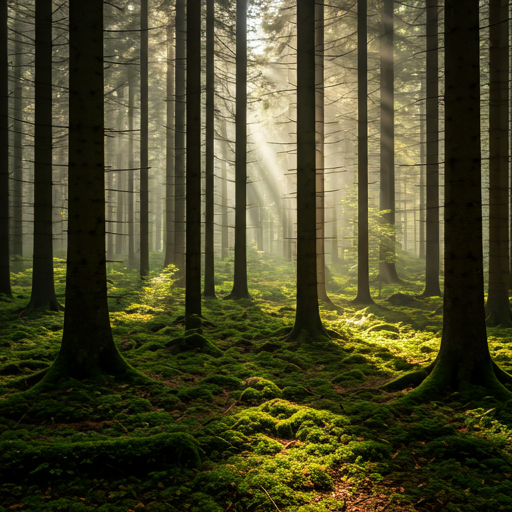
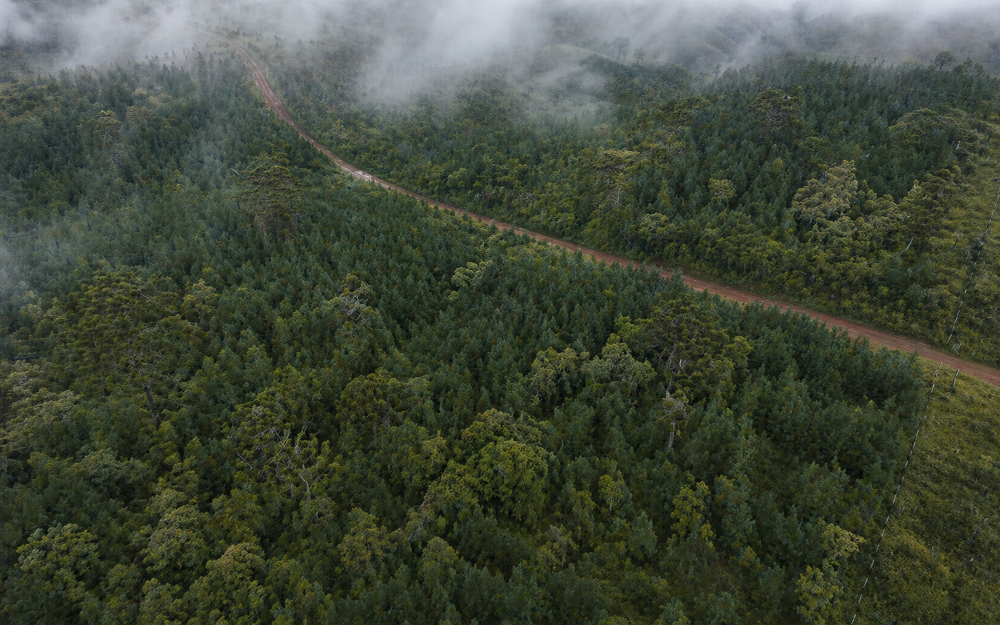
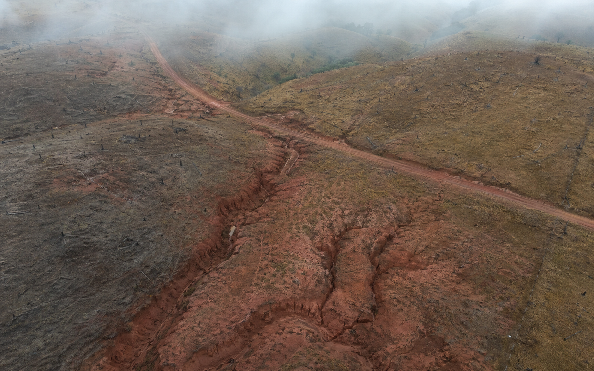
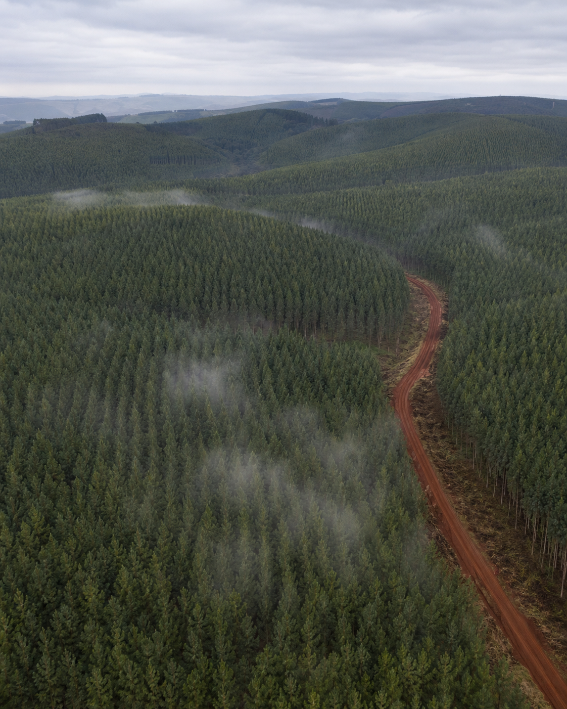
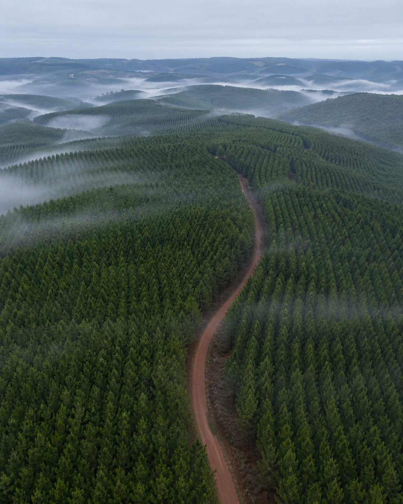
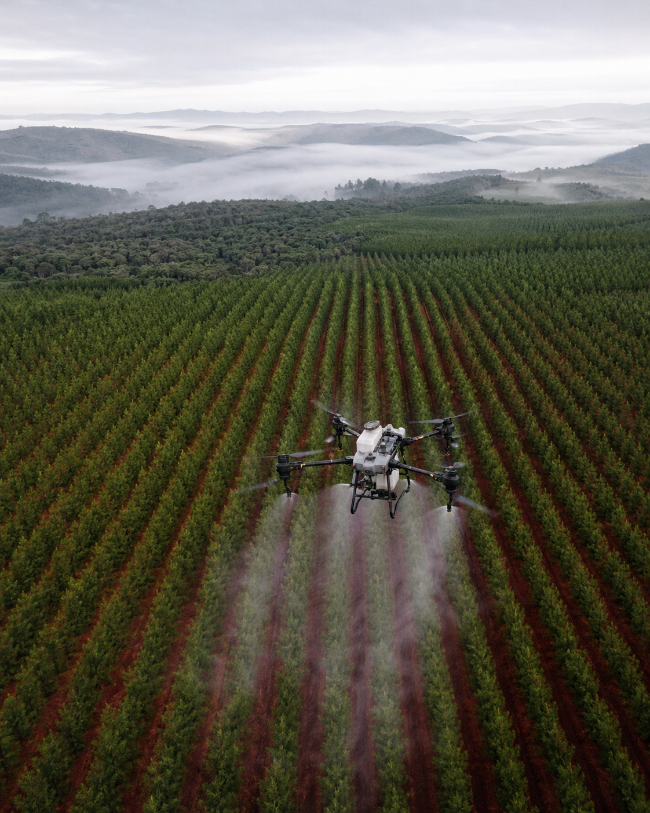
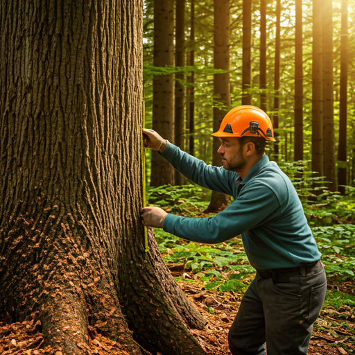
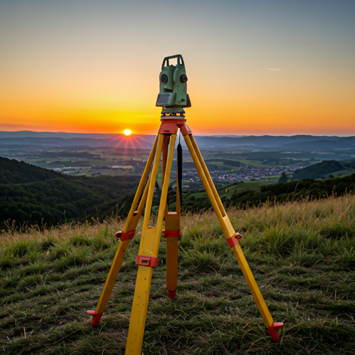
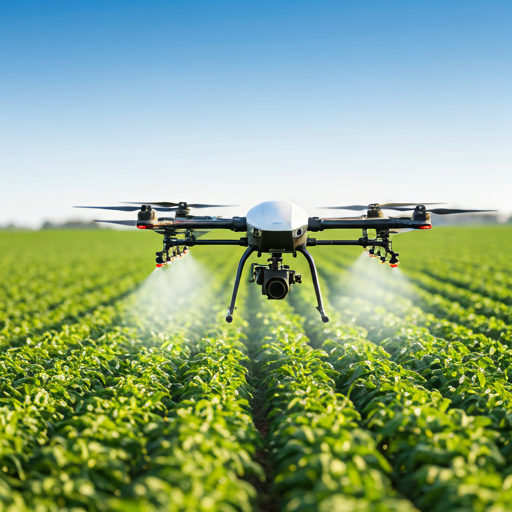
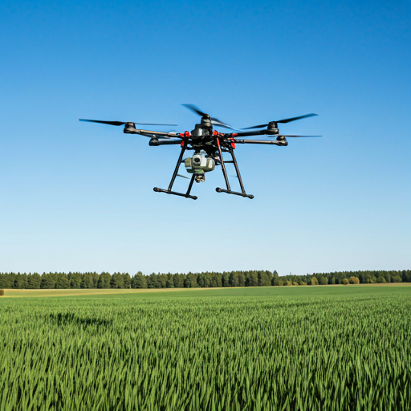

park
Reflorestamento
Recuperação de áreas degradadas com mudas nativas e Pinus, plano de manejo sustentável e acompanhamento técnico até o terceiro ano.

Reflorestamento, inventário, licenciamento ambiental, topografia e pulverização com drones — operando para silvicultores e produtores rurais no Paraná desde 2018.
Plantio, manejo e monitoramento documentados em laudos técnicos. Cada projeto carrega rastreabilidade GPS, fotografias aéreas e relatório agronômico assinado.
Fazendas atendidas
Hectares plantados
Equipes em campo
Cidades no Paraná
A Ma&Stral é uma empresa paranaense de serviços florestais e ambientais. Combinamos engenharia florestal, agronomia e operação aérea com drones para entregar manejo de Pinus, recuperação de áreas degradadas e licenciamento ambiental para silvicultores, cooperativas e produtores rurais.
Operamos com equipes próprias — sem terceirizar campo. Cada laudo, cada mapa e cada voo é responsabilidade da nossa engenharia.
Recuperação de áreas degradadas com mudas nativas e Pinus, plano de manejo sustentável e acompanhamento técnico até o terceiro ano.
Licenciamento ambiental, georreferenciamento de Reserva Legal/APP e regularização junto ao IAT e órgãos municipais.
Pulverização e distribuição de sólidos com drones, otimização de insumos e monitoramento aéreo da lavoura ao longo do ciclo.
Comparativos aéreos reais de áreas de Pinus recuperadas pela Ma&Stral em parceiros do Paraná. Arraste a alça para revelar o antes e depois.


Cobertura vegetal
Tempo de recuperação
Nativas plantadas
Hectares reflorestados pela Ma&Stral por ano. Dados consolidados de operações em campo.
Hectares plantados por ano
CO₂ sequestrado
Mudas de pinus
Taxa de sobrevivência
Atendidas no PR



Combinamos engenharia florestal, agronomia e operação aérea com drones para entregar resultados auditáveis em cada projeto — do plantio ao laudo.

Levantamento dendrométrico, volumetria por talhão e estimativa de produção. Relatório técnico com mapa por classe diamétrica.
Regularização junto ao IAT, georreferenciamento de Reserva Legal/APP, autorização de supressão e CAR.

Aerolevantamento com RTK, modelo digital de terreno e curvas de nível para projetos de engenharia e silvicultura.
Cartografia digital, ortomosaicos georreferenciados e mapas temáticos (NDVI, declividade, uso e ocupação do solo).

Aplicação aérea localizada, deriva controlada e redução média de 30% no uso de defensivos em manejo de Pinus.

Semeadura aérea, fertilização granulada e isca formicida em larga escala via drones DJI Agras.
Nossa frota não é vitrine. Cada equipamento listado abaixo é operado por piloto certificado pela ANAC e mantido em rotina interna de calibração.
Tanque 40 L · 21,5 ha/h · varredura 11 m
RTK 1 cm + 1 ppm · 55 min de voo · IP55
5 bandas + NDVI · detecção precoce de stress
Base própria em campo · precisão centimétrica
Conte o tamanho da área, a localização e o objetivo. Nossa equipe técnica retorna em até 24h com diagnóstico inicial e orçamento.